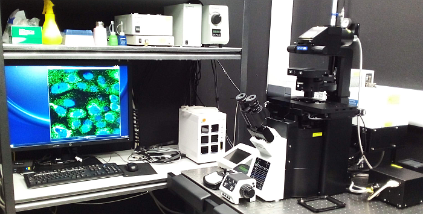

This laser scanning
confocal microscope is equipped with 4 laser lines, 4 detectors and a
camera. A hardware autofocus and a stage top incubator allow long-term
live cell imaging.

Available
techniques:
- Laser scanning microscopy (LSM) confocal imaging
- Widefield epifluorescence imaging
- Long-term live cell imaging
Objectives:
- UPLFLN 10x/0.3 dry, FWD 10 mm, CG -- (Phase)
- LUCPLFLN 20x/0.45 dry, FWD 6.6-7.8 mm, CG 0-2.0 mm (Phase)
- UPLSAPO 30x/1.05 silicone, FWD 0.8 mm, CG 0.13-0.19 mm
- UPLSAPO 60x/1.42 oil, FWD 0.15 mm, CG 0.17 mm
- UPLSAPO 100x/1.45 oil, FWD 0.13 mm, CG 0.17 mm
[FWD = free working distance, CG = cover glass]
Fluorescence
excitation sources:
FV1200 laser lines:
- 405 nm, 473 nm, 559 nm, 635 nm
Epifluorescence:
- Mercury metal halide lamp
Filter sets and
dichroics:
To be updated
Detectors and
cameras:
- 3 Multialkali PMTs
- 1 high-sensitivity PMT
- Transmitted light PMT
- DP73 Colour CCD camera (1600 x 1200 pixels, 4.4 μm/pixel)
Software:
Other features:
| Usage fees* [SGD/hour] |
NTU |
Academia |
Industry |
| 30 |
45 |
72 |
| Location |
ABIF, SCELSE, B2 (SBS-B2n-27P.4) |
| Safety Notice |
Requires N3 laser license
(N2/04107/0169) |
| Contact |
abif@e.ntu.edu.sg;
nobic.facilities@e.ntu.edu.sg |
* Long-term discounts of 75% and 95% apply after 8 and 24 hours of
continuous usage, respectively.
BACK TO TOP